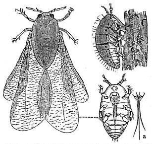
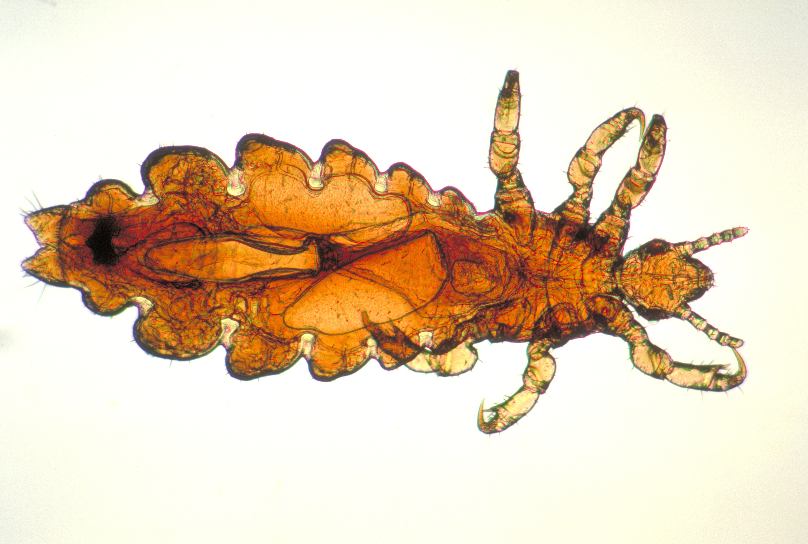
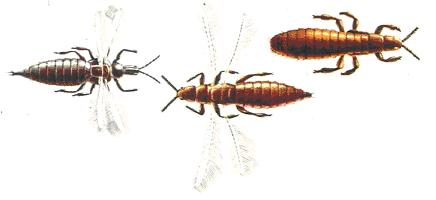

|
Hemiptera

Les hémiptères (Hemiptera) sont un ordre d'insectes, sous-classe des ptérygotes, section des néoptères, super-ordre des hémiptéroidés. Il comprend près de 100 000 espèces d'insectes suceurs de phloème, comme les cigales, pucerons, cochenilles et punaises. Son existence remonte à plus de 250 millions d'années. |
Phthiraptera

Les phthiraptères (Phthiraptera) regroupent aujourd'hui dans un ordre unique l'ensemble des insectes classiquement désignés sous le nom de poux, parmi lesquels le pou de l'homme. La classification ancienne distinguait comme deux ordres distincts les poux des mammifères, suceurs de sang (les anoploures), des « poux des oiseaux » (ou mallophages), à l'alimentation plus variée. Il s'agit dans tous les cas d'ectoparasites dépourvus d'ailes. |
Thysanoptera

Les thrips constituent l'ordre des thysanoptères (Thysanoptera).Ce sont des insectes ptérygotes néométaboles de taille minuscule, au corps allongé et aux ailes bordées de soies longues et fines (d'où leur nom scientifique, qui évoque des ailes (pteron, en grec) frangées (thysanos ; frange, en grec). Le mot thrips vient également du grec, langue dans laquelle il désigne les « poux du bois » ou les « cloportes ». |